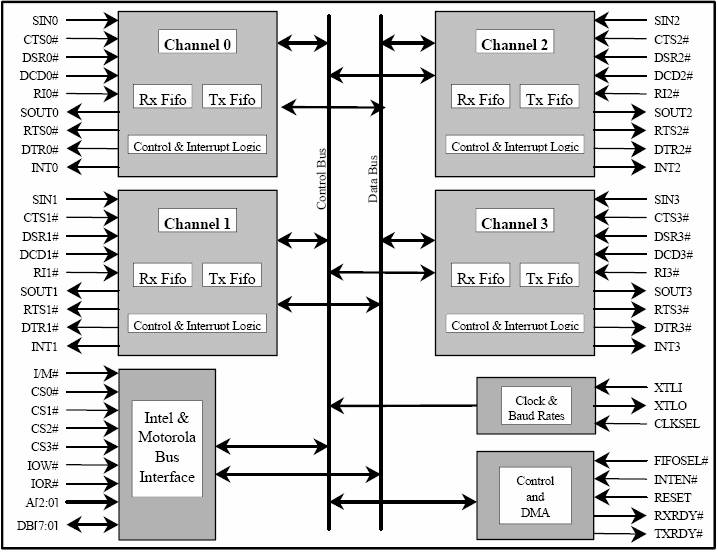

| Simpole® |
|
|
|---|
PCI8433板卡是NI公司生产的高性能串行通信板卡，提供4个RS422、RS485通道，通信速率从57b/s到3Mb/s。
具体内容如下：
PCI8433板卡包含4个独立的RS422、RS485通道模块、时钟和波特率模块、控制和DMA模块以及总线接口模块，各个模块之间经由控制总线和数据总线进行命令和数据的交互。PCI8433板卡架构如下图所示。
PCI8433板卡的特点如下:
|
RS422/RS485 Implementation Guide
|
RS422/RS485 SimpoleD Reference
|
|---|